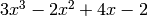
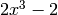
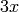
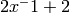

2. Global functions¶
pypol module has some functions to work with polynomials. If you need other utility functions check the pypol.funcs and pypol.roots modules.
- pypol.poly1d(coeffs, variable='x', right_hand_side=True)¶
Make a 1 dimension polynomial from a list of coefficients.
Parameters: - coeffs (list) – the list of the polynomial coefficients
- variable (string) – the letter of the polynomial, default x
- right_hand_side (bool or None) – if True, the last term of coeffs will be the right hand-side of the polynomial
Examples
We create the polynomials ,  and .
>>> poly1d([3, -2, 4, -2]) + 3x^3 - 2x^2 + 4x - 2 >>> poly1d([2, 0, 0, -2]) + 2x^3 - 2
pay attention here:
>>> poly1d([3], right_hand_side=False) + 3x
because if you don’t do this:
>>> poly1d([3]) + 3
3 will be interpreted as the right_hand_side of the polynomial.
An alternative solution may be:
>>> poly1d([3, 0]) + 3x
- pypol.poly1d_2(monomials, variable='x')¶
Make a 1 dimension polynomial from a list of lists.
Parameters: - monomials (list) – a list of lists that represents the polynomial’s monomial; evary sub-list has the coefficient and the power of the variable
- variable (string) – the letter of the polynomial (default x)
Return type: Examples
We want to create these two polynomials:
 and
and  :
:>>> poly1d_2([[-1, 7], [2, 3], [-2, 2], [1, 1]]) - x^7 + 2x^3 - 2x^2 + x >>> poly1d_2([[1, 1]]) + x
This function is very useful when you need a polynomial with negative powers or with spread powers:
>>> poly1d_2([[1, -1], [2, -3], [3, 5]]) + 3x^5 + x^-1 + 2x^-3
or:
>>> poly1d_2([[2, 9], [1, 2]]) + 2x^9 + x^2
in this case, if you want to use poly1d() or polynomial() you can do this:
>>> poly1d([2, 0, 0, 0, 0, 0, 0, 1, 0, 0]) + 2x^9 + x^2 >>> poly1d([2, 0, 0, 0, 0, 0, 0, 1, 0], right_hand_side=False) + 2x^9 + x^2 >>> polynomial('2x^9 + x^2') + 2x^9 + x^2 >>> polynomial('2x9 x2') + 2x^9 + x^2
- pypol.polynomial(string=None, simplify=True)¶
Returns a Polynomial object.
Parameters: - string (string or None) – a string that represent a polynomial, default is None.
- simplify (bool) – if True, the polynomial will be simplified on __init__ and on update.
Return type: Warning
With this function you cannot make polynomials with negative powers. In case you want to use negative powers, use poly1d_2() instead.
Examples
We want to make the polynomial :
>>> polynomial('2x^-1 + 2') + 2x + 1 ## Wrong! >>> k = poly1d_2([[2, -1], [2, 0]]) >>> k + 2x^-1 + 2 >>> k.sort(key=k._key('x')) >>> k + 2x^-1 + 2
2.1. polynomial()‘s syntax rules¶
Powers can be expressed using the ^ symbol. If a digit follows a letter then it is interpreted as an exponent. So the following expressions are equal:
>>> polynomial('2x^3y^2 + 1') == polynomial('2x3y2 + 1')
True
but if there is a white space after the letter then the digit is interpreted as a positive coefficient. So this:
>>> polynomial('2x3y 2 + 1')
represents this polynomial:
2x^3y + 3
>>> polynomial('2x3y 2 + 1')
+ 2x^3y + 3
- pypol.algebraic_fraction(s1, s2='1', simplify=True)¶
Wrapper function that returns an AlgebraicFraction object.
Parameters s1, s2: two strings that represent a polynomial >>> algebraic_fraction('3x^2 - 4xy', 'x + y') AlgebraicFraction(+ 3x² - 4xy, + x + y) >>> algebraic_fraction('3x^2 - 4xy', 'x + y').terms (+ 3x^2 - 4xy, + x + y)
See also
- pypol.monomial(coeff=1, **vars)¶
Simple function that returns a Polynomial object.
Parameters: coeff – the coefficient of the polynomial Key **vars: the monomial’s letters >>> monomial(5, a=3, b=4) + 5a^3b^4 >>> m = monomial(5, a=3, b=4) >>> m + 5a^3b^4 >>> type(m) <class 'pypol.src.pypol.Polynomial'> >>> m.monomials ((5, {'a': 3, 'b': 4}),)
This function is useful when you need a monomial. Without it you should do:
>>> Polynomial(((5, {'a': 3, 'b': 4}),)) + 5a^3b^4
Either coeff or **vars is optional:
>>> monomial() + 1 >>> monomial(1) + 1
Equivalent to:
def monomial(coeff=1, **vars): return Polynomial(((coeff, vars),))
New in version 0.2.
New in version 0.4: The *var parameter
- pypol.parse_polynomial(string, max_length=None)¶
Parses a string that represent a polynomial. It can parse integer coefficients, float coefficient and fractional coefficient.
Parameters: - string – a string that represent a polynomial
- max_length (integer or None) – represents the maximum length that the polynomial can have.
An example:
>>> parse_polynomial('2x^3 - 3y + 2') [(2, {'x': 3}), (-3, {'y': 1}), (2, {})] >>> parse_polynomial('x3 - 3y2 + 2') [(1, {'x': 3}), (-3, {'y': 2}), (2, {})]
See also
- pypol.gcd(a, b)¶
Returns the Greatest Common Divisor between two polynomials:
>>> gcd(polynomial('3x'), polynomial('6x^2')) + 3x
- pypol.lcm(a, b)¶
Returns the Least Common Multiple between two polynomials:
>>> lcm(polynomial('3x'), polynomial('6x^2')) + 6x^2
See also
pypol.funcs for other utility functions.